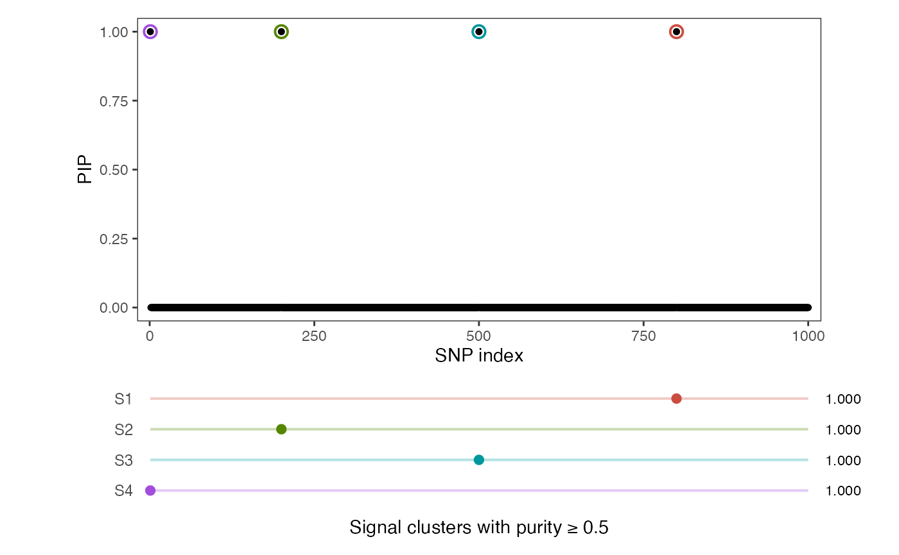

DAP-S fine-mapping using sufficient statistics, either provided directly or recovered from regression summary statistics.
Arguments
- XtX
A p x p matrix X'X in which the columns of X are centered and p is the number of SNPs.
- Xty
A p-vector X'y in which y and the columns of X are centered.
- yty
A scalar y'y in which y is centered.
- n
Sample size.
- L
Maximum number of causal SNPs allowed in the model. Default is min(10, p).
- standardize
Standardize each column of X and y. Default is FALSE.
- prior
SNP-level prior weights, given as a vector of length p. Default is NULL which corresponds to uninformative weights.
- null_wt
Null weight used in SuSiE, defined as the prior probability of no causal variants in the region. Default is calculated as
prod(1 - prior).- estimate_residual_variance
Estimate residual variance in SuSiE. Default is TRUE.
- proposal_thresh
Threshold for proposal acceptance. Default value is 1e-6.
- grid
Grid of values for scaled effect size prior variance. Default is c(0.04, 0.16, 0.64).
- twas_weight
Compute TWAS weights. Default is FALSE.
- coverage
Coverage level for credible set (e.g. 0.95). Default is NULL, in which the algorithm returns signal clusters that are not constrained by a fixed coverage level.
- min_abs_corr
Minimum absolute correlation allowed in a signal cluster or credible set. Default is 0.5, which corresponds to a squared correlation of 0.25.
- ...
Other parameters to be passed to
susie_suff_stat.
Examples
set.seed(1234)
n <- 1000
p <- 1000
beta <- rep(0, p)
beta[c(1, 200, 500, 800)] <- 1
X <- matrix(rnorm(n*p), nrow = n, ncol = p)
X <- scale(X, center = TRUE, scale = TRUE)
y <- X %*% beta + rnorm(n)
y <- scale(y, center = TRUE, scale = FALSE)
XtX <- crossprod(X)
Xty <- as.numeric(crossprod(X, y))
yty <- sum(y^2)
rst <- daps_ss(XtX, Xty, yty, n, L = 5)
rst$sets
#> $sets
#> $sets$S1
#> [1] 800
#>
#> $sets$S2
#> [1] 200
#>
#> $sets$S3
#> [1] 500
#>
#> $sets$S4
#> [1] 1
#>
#>
#> $purity
#> min.abs.corr mean.abs.corr median.abs.corr
#> S1 1 1 1
#> S2 1 1 1
#> S3 1 1 1
#> S4 1 1 1
#>
#> $set_index
#> [1] 1 2 3 4
#>
#> $coverage
#> [1] 1 1 1 1
#>
#> $min_abs_corr
#> [1] 0.5
#>
#> $requested_coverage
#> NULL
#>
daps_plot(rst)
